![]()
Código
import matplotlib.pyplot as plt
# Datos de ejemplo
x = [1, 2, 3, 4, 5]
y = [2, 4, 6, 8, 10]
# Crear el gráfico de línea
plt.plot(x, y)
# Mostrar el gráfico
plt.show()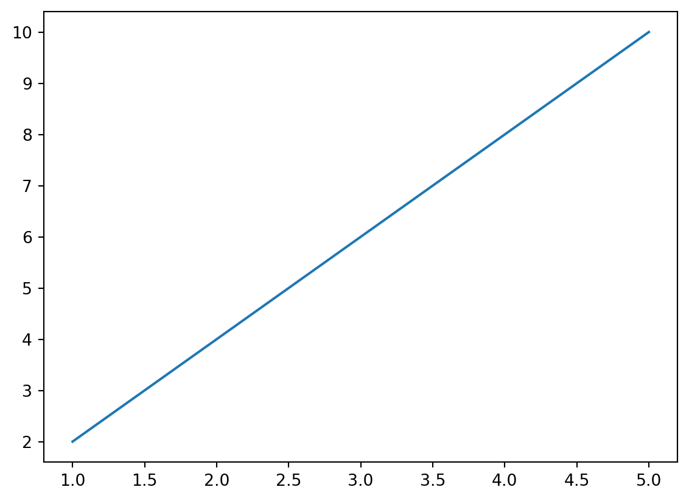
Explora los conceptos básicos y las bibliotecas populares para crear gráficos impactantes y comprensibles.
Descubre cómo transformar tus datos en gráficos atractivos y significativos. Aprende las bases de la visualización de datos y domina las herramientas clave para crear gráficos impactantes.
Cuando nos enfrentamos a un conjunto de datos, a veces puede resultar abrumador tratar de extraer información significativa y comprender patrones importantes. Aquí es donde entran en juego los gráficos. Los gráficos son una herramienta visual poderosa que nos permite representar datos de manera clara y comprensible.
Imagina esto: en lugar de mirar una larga lista de números o leer tablas extensas, puedes ver tus datos plasmados en un gráfico colorido y fácil de interpretar. Los gráficos nos permiten visualizar tendencias, comparar valores y descubrir relaciones ocultas entre variables. Son como una ventana que nos permite explorar y comprender los datos de manera más intuitiva.
Los gráficos no solo hacen que el análisis de datos sea más accesible, sino que también nos ayudan a comunicar nuestros hallazgos de manera efectiva. Una imagen vale más que mil palabras, ¿verdad? Al presentar información a través de gráficos, podemos transmitir mensajes complejos de manera clara y concisa, lo que facilita que otras personas comprendan nuestros resultados.
Cuando se trata de crear gráficos, Python ofrece una serie de ventajas que lo convierten en una herramienta popular y poderosa en el análisis de datos. Veamos algunas de estas ventajas:
Facilidad de uso: Python es un lenguaje de programación de alto nivel y fácil de aprender. Su sintaxis clara y legible permite a los usuarios escribir código de forma concisa y comprensible. Esto facilita la creación de gráficos, incluso para aquellos que no tienen experiencia previa en programación.
Gran cantidad de bibliotecas: Python cuenta con una amplia gama de bibliotecas especializadas en la visualización de datos. Algunas de las más populares son Matplotlib, Seaborn y Plotly. Estas bibliotecas ofrecen una variedad de estilos de gráficos, opciones de personalización y herramientas interactivas para explorar y presentar tus datos de manera efectiva.
Compatibilidad con otras herramientas: Python se integra fácilmente con otras herramientas y bibliotecas utilizadas en el análisis de datos. Puedes combinar el poder de Python con bibliotecas como Pandas para el procesamiento de datos, NumPy para operaciones numéricas y SciPy para análisis científico. Esta interoperabilidad facilita la manipulación y preparación de datos antes de crear tus gráficos.
Comunidad activa: Python cuenta con una gran comunidad de desarrolladores y usuarios que constantemente contribuyen con nuevas funcionalidades, mejoras y ejemplos de uso. Esto significa que siempre encontrarás recursos, tutoriales y soporte disponibles para ayudarte a resolver cualquier problema o desafío que encuentres al crear tus gráficos.
Flexibilidad y versatilidad: Python te permite crear una amplia variedad de gráficos, desde simples diagramas de barras hasta complejas visualizaciones en 3D. Puedes adaptar tus gráficos a tus necesidades específicas y personalizarlos con colores, etiquetas, leyendas y más. Además, puedes exportar tus gráficos en varios formatos de imagen o incrustarlos en informes y aplicaciones.
Afortunadamente, Python cuenta con varias bibliotecas populares que facilitan la creación de gráficos de calidad. Aquí te presentamos algunas de las más utilizadas:
Matplotlib es una biblioteca ampliamente utilizada y flexible que proporciona una gran variedad de funciones y estilos para crear gráficos estáticos. Es una excelente opción para aquellos que desean un control detallado sobre la apariencia de sus visualizaciones.
Seaborn es una biblioteca basada en Matplotlib que simplifica la creación de gráficos estéticamente agradables. Ofrece una interfaz de alto nivel y opciones predefinidas para la visualización de datos estadísticos y de análisis exploratorio.
Plotly es una biblioteca interactiva que permite crear gráficos interactivos y dinámicos, incluyendo gráficos en 3D, diagramas de dispersión animados y mapas interactivos. Además, ofrece opciones de visualización en la web y la posibilidad de compartir tus gráficos en línea.
Bokeh es otra biblioteca de visualización interactiva que se centra en la creación de gráficos interactivos de alta calidad para la web. Ofrece una sintaxis sencilla y la posibilidad de crear gráficos interactivos con herramientas de zoom, selección y desplazamiento.
Antes de sumergirnos en el emocionante mundo de los gráficos con Python, es importante asegurarnos de tener todo configurado correctamente. A continuación, te guiaré a través de los pasos para instalar Python y las bibliotecas necesarias:
Paso 1: Descargar Python Dirígete al sitio web oficial de Python (https://www.python.org/) y descarga la última versión estable. Elige la versión adecuada para tu sistema operativo y sigue las instrucciones de instalación.
Paso 2: Verificar la instalación Una vez que hayas instalado Python, puedes verificar si se instaló correctamente abriendo una ventana de terminal y escribiendo el siguiente comando:
python --versionSi aparece la versión de Python que instalaste, ¡felicidades! Estás listo para seguir adelante.
Paso 3: Instalar las bibliotecas Para crear gráficos con Python, necesitarás instalar algunas bibliotecas populares como Matplotlib, Seaborn y Plotly. Puedes instalar estas bibliotecas utilizando el administrador de paquetes de Python, pip. Simplemente ejecuta los siguientes comandos en tu terminal:
pip install matplotlib
pip install seaborn
pip install plotlyEsto instalará las bibliotecas requeridas y todas sus dependencias.
¡Y eso es todo! Ahora tienes Python y las bibliotecas necesarias instaladas en tu sistema. Estás listo para empezar a crear increíbles gráficos y explorar tus datos de manera visual.
Antes de sumergirnos en la creación de gráficos increíbles, es importante configurar nuestro entorno de desarrollo para trabajar de manera eficiente. Sigue estos pasos sencillos para asegurarte de tener todo listo:
Paso 1: Elige tu entorno Existen diferentes entornos de desarrollo integrados (IDE) disponibles para Python, como PyCharm, Jupyter Notebook y Visual Studio Code. Elige el que te resulte más cómodo y familiar, o siéntete libre de probar varios para encontrar el que se ajuste mejor a tus necesidades.
Paso 2: Crea un proyecto Organizar tu trabajo en proyectos te ayudará a mantener todo ordenado y estructurado. Crea un nuevo proyecto en tu IDE y asigna un nombre significativo. Esto te permitirá tener todos tus archivos y recursos relacionados en un solo lugar.
Paso 3: Importa las bibliotecas necesarias Recuerda importar las bibliotecas que instalaste previamente, como Matplotlib, Seaborn y Plotly, en tu proyecto. Asegúrate de incluir las siguientes líneas de código al comienzo de tu archivo de Python:
import matplotlib.pyplot as plt
import seaborn as sns
import plotly.graph_objects as goEsto permitirá que tu proyecto reconozca estas bibliotecas y puedas utilizar sus funciones y capacidades.
Paso 4: Configura tu entorno Dependiendo del IDE que elijas, es posible que tengas opciones de configuración adicionales. Ajusta el tema, el tamaño de fuente y los atajos de teclado según tus preferencias. Esto te permitirá personalizar tu experiencia de desarrollo y trabajar de manera más eficiente.
¡Y eso es todo! Ahora tienes tu entorno de desarrollo configurado y listo para crear gráficos sorprendentes con Python. En el siguiente fragmento del blog, exploraremos diferentes tipos de gráficos y cómo utilizar las funciones y opciones disponibles en las bibliotecas para obtener resultados impactantes.
¡Prepárate para desatar tu creatividad y visualizar tus datos como nunca antes!
Los gráficos de línea son una de las formas más comunes y simples de representar datos. Son ideales para mostrar la relación y la tendencia entre diferentes puntos de datos a lo largo de un eje X (horizontal). Veamos cómo crear un gráfico de línea en Python utilizando la biblioteca Matplotlib.
Paso 1: Preparar los datos Antes de crear el gráfico, necesitamos tener nuestros datos listos. Asegúrate de tener dos listas o arrays: una para el eje X, que representará las etiquetas o valores en el eje horizontal, y otra para el eje Y, que será la variable que queremos visualizar en el eje vertical.
Paso 2: Crear el gráfico Utilizaremos la función plot() de Matplotlib para crear el gráfico de línea. Pasaremos nuestros datos de los ejes X e Y como argumentos. A continuación, utilizaremos la función show() para visualizar el gráfico.
import matplotlib.pyplot as plt
# Datos de ejemplo
x = [1, 2, 3, 4, 5]
y = [2, 4, 6, 8, 10]
# Crear el gráfico de línea
plt.plot(x, y)
# Mostrar el gráfico
plt.show()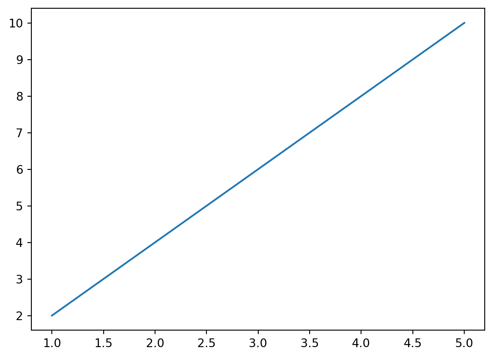
Los gráficos de barras son una excelente forma de representar datos categóricos y comparar diferentes valores entre categorías. Son ideales cuando queremos mostrar la relación entre una variable independiente (categoría) y una variable dependiente (valor).
Paso 1: Preparar los datos Antes de crear el gráfico de barras, necesitamos tener nuestros datos organizados. Asegúrate de tener una lista o array con las categorías que deseas representar en el eje X, y otra lista o array con los valores correspondientes en el eje Y.
Paso 2: Crear el gráfico Utilizaremos la función bar() de Matplotlib para crear el gráfico de barras. Pasaremos nuestros datos de los ejes X e Y como argumentos. A continuación, utilizaremos la función show() para visualizar el gráfico.
import matplotlib.pyplot as plt
# Datos de ejemplo
categorias = ['A', 'B', 'C', 'D']
valores = [10, 15, 7, 12]
# Crear el gráfico de barras
plt.bar(categorias, valores)
# Mostrar el gráfico
plt.show()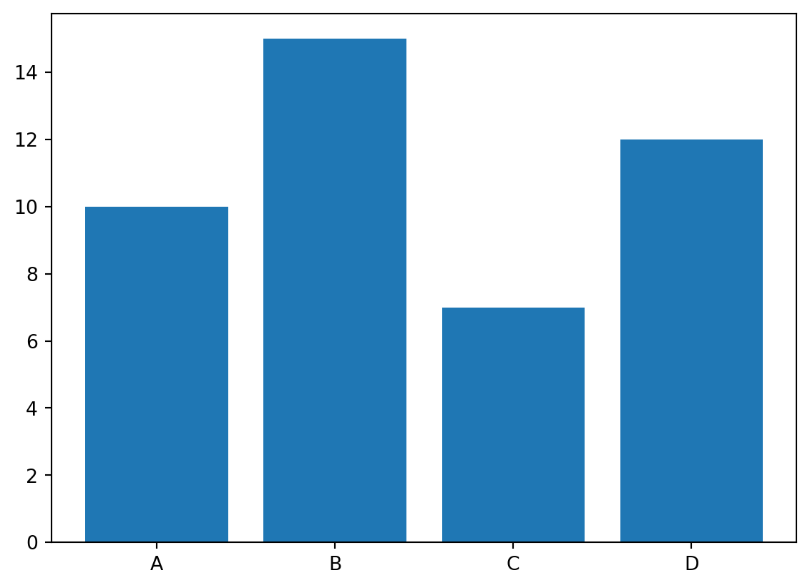
Los gráficos de dispersión son una excelente opción cuando queremos visualizar la relación entre dos variables numéricas. Son especialmente útiles para identificar patrones, tendencias o la existencia de alguna correlación entre los datos.
Paso 1: Preparar los datos Antes de crear el gráfico de dispersión, debemos asegurarnos de tener dos conjuntos de datos: uno para el eje X (variable independiente) y otro para el eje Y (variable dependiente). Asegúrate de que ambos conjuntos tengan la misma longitud y correspondencia adecuada.
Paso 2: Crear el gráfico Utilizaremos la función scatter() de Matplotlib para crear el gráfico de dispersión. Pasaremos nuestros datos de los ejes X e Y como argumentos. Luego, utilizaremos la función show() para visualizar el gráfico.
import matplotlib.pyplot as plt
# Datos de ejemplo
x = [1, 2, 3, 4, 5]
y = [4, 7, 2, 9, 5]
# Crear el gráfico de dispersión
plt.scatter(x, y)
# Mostrar el gráfico
plt.show()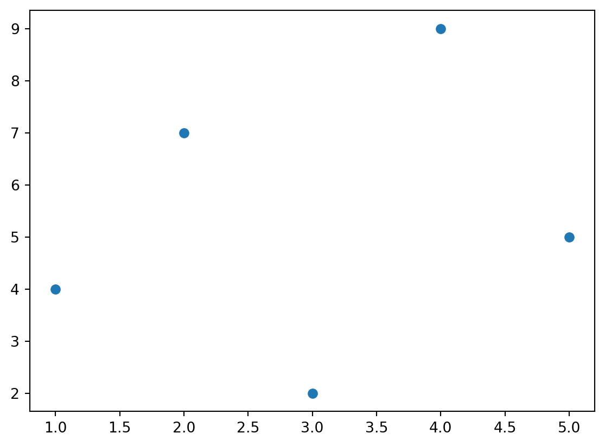
Los gráficos de área son una forma efectiva de visualizar la distribución o acumulación de datos a lo largo de una variable. Estos gráficos son útiles cuando queremos mostrar la contribución relativa de diferentes categorías o variables a un total.
Paso 1: Preparar los datos Antes de crear el gráfico de área, debemos tener un conjunto de datos que represente las diferentes categorías o variables que queremos visualizar. También necesitaremos los valores correspondientes para cada categoría o variable.
Paso 2: Crear el gráfico Utilizaremos la función fill_between() de Matplotlib para crear el gráfico de área. Pasaremos los datos de los ejes X e Y como argumentos y especificaremos el color del área. Luego, utilizaremos la función show() para visualizar el gráfico.
import matplotlib.pyplot as plt
# Datos de ejemplo
x = [1, 2, 3, 4, 5]
y = [2, 4, 6, 4, 8]
# Crear el gráfico de área
plt.fill_between(x, y, color='skyblue')
# Mostrar el gráfico
plt.show()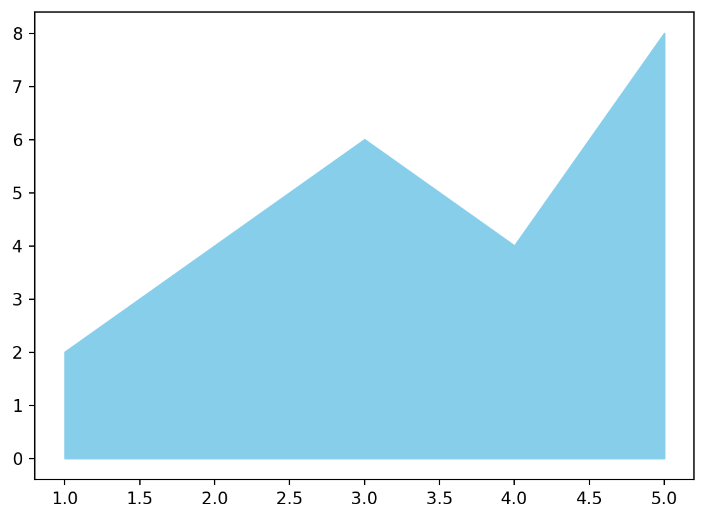
Los gráficos de pastel son una forma popular de visualizar la proporción de diferentes categorías o variables en un conjunto de datos. Estos gráficos circulares son útiles para representar datos que se dividen en partes proporcionales.
Paso 1: Preparar los datos Antes de crear el gráfico de pastel, debemos tener un conjunto de datos con las categorías o variables que queremos representar y los valores correspondientes para cada una de ellas.
Paso 2: Crear el gráfico Utilizaremos la función pie() de Matplotlib para crear el gráfico de pastel. Pasaremos los valores de las categorías como argumentos y especificaremos los colores y etiquetas correspondientes. Luego, utilizaremos la función show() para visualizar el gráfico.
import matplotlib.pyplot as plt
# Datos de ejemplo
categorias = ['Manzanas', 'Naranjas', 'Plátanos']
valores = [30, 40, 20]
# Crear el gráfico de pastel
plt.pie(valores, labels=categorias, colors=['red', 'orange', 'yellow'])
# Mostrar el gráfico
plt.show()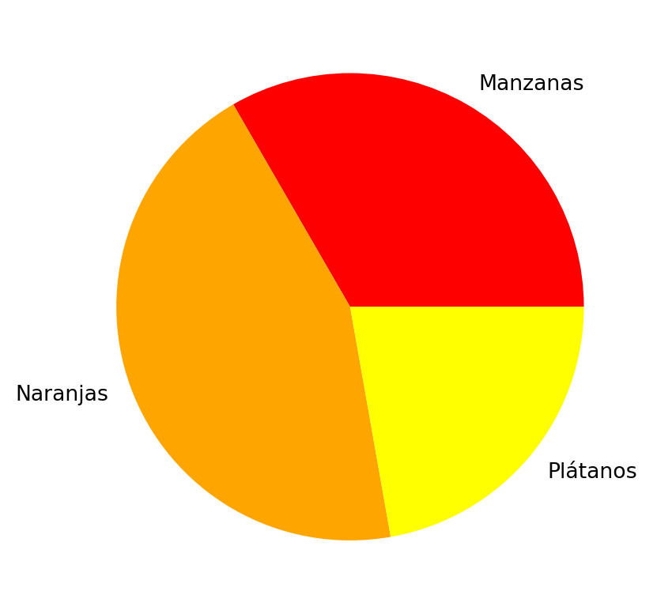
La personalización de colores y estilos en los gráficos es una forma de agregar tu toque personal y hacer que tus visualizaciones sean más atractivas y significativas. Con Python, puedes cambiar fácilmente los colores de las líneas, los puntos y las áreas en tus gráficos, así como también aplicar diferentes estilos para resaltar la información más relevante.
Cambio de colores:
Puedes cambiar los colores predeterminados de tus gráficos utilizando la opción color en las funciones de trazado. Por ejemplo, si deseas cambiar el color de una línea en un gráfico de línea, puedes especificar un color diferente utilizando el argumento color seguido del nombre del color o su código hexadecimal.
import matplotlib.pyplot as plt
# Datos de ejemplo
x = [1, 2, 3, 4]
y = [10, 20, 15, 25]
# Cambiar el color de la línea a rojo
plt.plot(x, y, color='red')
# Mostrar el gráfico
plt.show()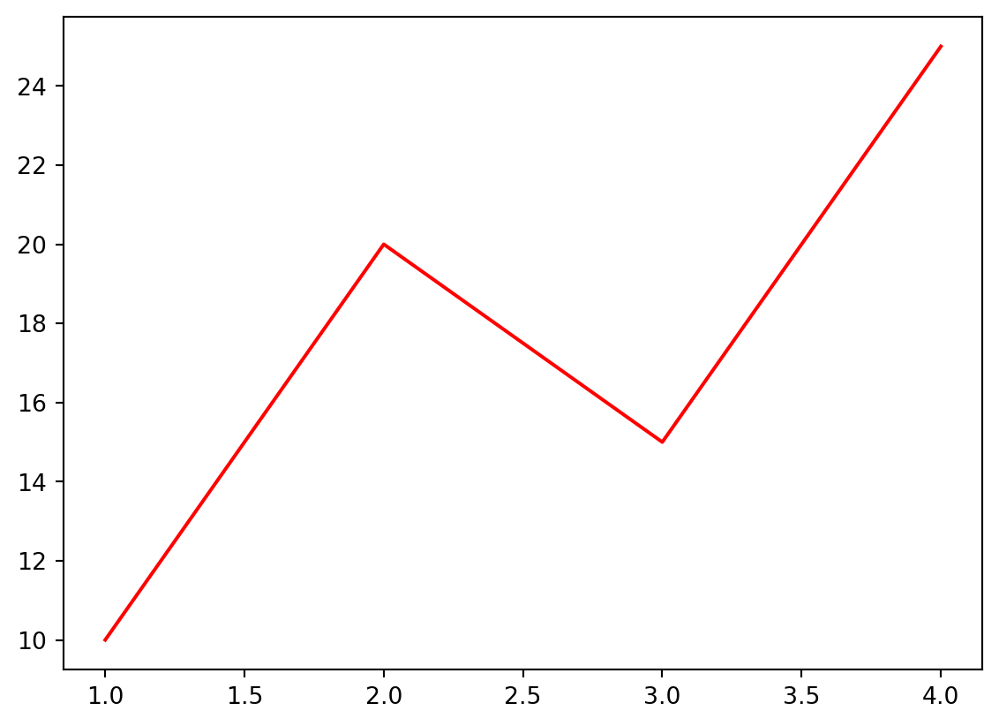
Además de los colores predefinidos, también puedes utilizar códigos hexadecimales para seleccionar colores personalizados. Por ejemplo, color='#FF0000' representa el color rojo.
Cambio de estilos:
Python también te permite cambiar el estilo de tus gráficos para adaptarlos a tus preferencias. Puedes utilizar diferentes estilos predefinidos, como 'seaborn', 'ggplot', 'fivethirtyeight', entre otros. Simplemente utiliza la función plt.style.use() y pasa el nombre del estilo que deseas aplicar.
import matplotlib.pyplot as plt
# Estilo de gráfico 'seaborn'
plt.style.use('seaborn')
# Datos y trazado del gráfico
x = [1, 2, 3, 4]
y = [10, 20, 15, 25]
plt.plot(x, y)
# Mostrar el gráfico
plt.show()/tmp/ipykernel_45674/805058915.py:4: MatplotlibDeprecationWarning:
The seaborn styles shipped by Matplotlib are deprecated since 3.6, as they no longer correspond to the styles shipped by seaborn. However, they will remain available as 'seaborn-v0_8-<style>'. Alternatively, directly use the seaborn API instead.
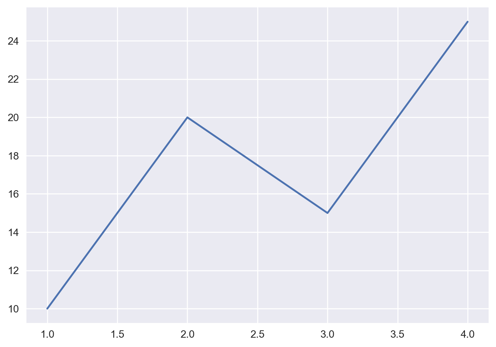
Puedes experimentar con diferentes estilos y encontrar el que se ajuste mejor a tus necesidades y preferencias.
Las etiquetas y los títulos son elementos clave en tus gráficos, ya que proporcionan información adicional y ayudan a interpretar los datos de manera más clara. Python te ofrece varias opciones para agregar etiquetas a los ejes, así como títulos para el gráfico en general.
Etiquetas de ejes:
Las etiquetas de ejes son fundamentales para comprender qué representan los valores en los gráficos. Puedes agregar etiquetas a los ejes x e y utilizando las funciones plt.xlabel() y plt.ylabel(), respectivamente. Simplemente pasa una cadena de texto como argumento para describir cada eje.
import matplotlib.pyplot as plt
# Datos de ejemplo
x = [1, 2, 3, 4]
y = [10, 20, 15, 25]
# Trazado del gráfico
plt.plot(x, y)
# Etiquetas de ejes
plt.xlabel('Eje X')
plt.ylabel('Eje Y')
# Mostrar el gráfico
plt.show()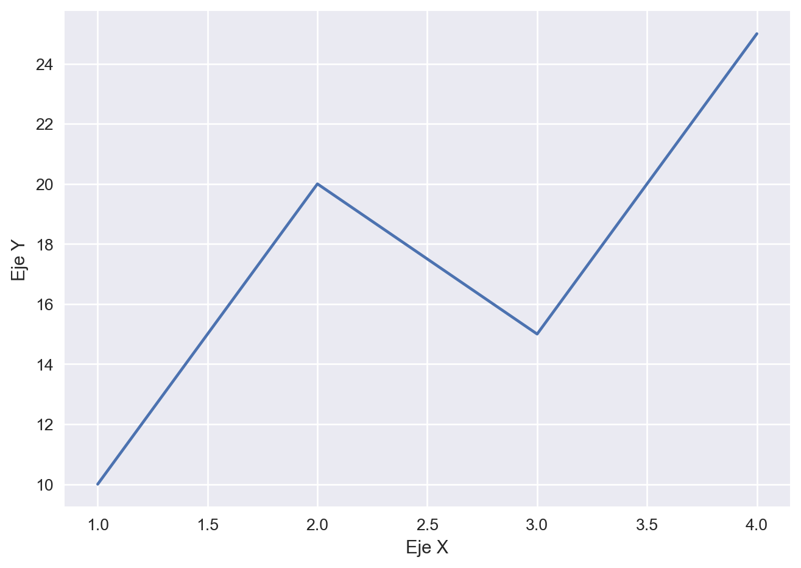
Asegúrate de elegir etiquetas descriptivas que reflejen el contenido y la interpretación de los datos en tus gráficos.
Título del gráfico:
El título del gráfico es útil para resumir la información principal o el propósito del gráfico. Puedes agregar un título utilizando la función plt.title() y pasando una cadena de texto como argumento.
import matplotlib.pyplot as plt
# Datos de ejemplo
x = [1, 2, 3, 4]
y = [10, 20, 15, 25]
# Trazado del gráfico
plt.plot(x, y)
# Título del gráfico
plt.title('Gráfico de ejemplo')
# Mostrar el gráfico
plt.show()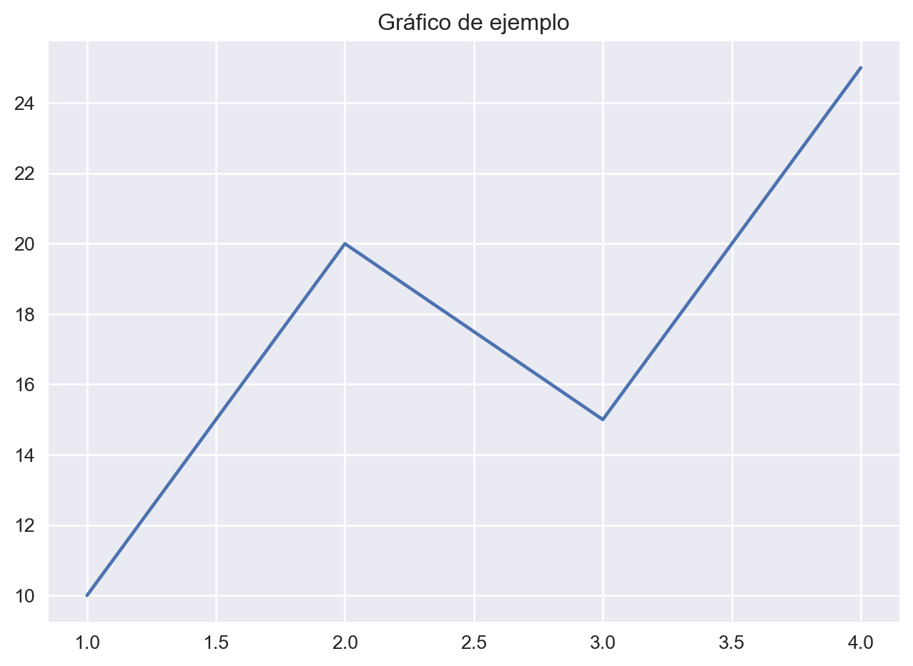
Al igual que con las etiquetas de ejes, elige un título claro y conciso que resuma la información que se muestra en el gráfico.
La configuración de los ejes y las leyendas en tus gráficos es fundamental para proporcionar más información y claridad a tus visualizaciones. Python te ofrece diversas opciones para personalizar los ejes y agregar leyendas que ayuden a interpretar tus gráficos de manera efectiva.
Personalización de ejes:
Puedes personalizar los ejes de tu gráfico mediante la función plt.axis(), que te permite establecer los límites de los ejes x e y. Pasa una lista en el siguiente orden: [xmin, xmax, ymin, ymax] para definir los límites de cada eje.
import matplotlib.pyplot as plt
# Datos de ejemplo
x = [1, 2, 3, 4]
y = [10, 20, 15, 25]
# Trazado del gráfico
plt.plot(x, y)
# Personalización de ejes
plt.axis([0, 5, 0, 30])
# Mostrar el gráfico
plt.show()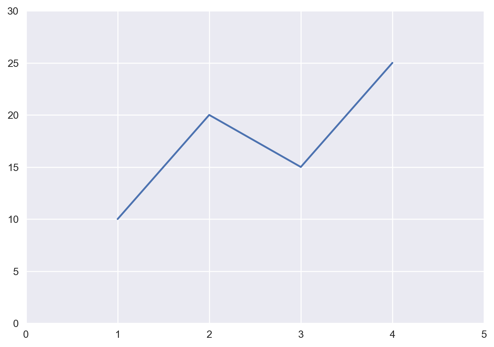
Establecer límites adecuados en los ejes es importante para asegurarte de que tus datos se muestren correctamente y se ajusten al espacio disponible en el gráfico.
Agregando leyendas:
Las leyendas son útiles para identificar diferentes elementos en tus gráficos, como líneas, barras o puntos. Puedes agregar una leyenda utilizando la función plt.legend() después de trazar los elementos en tu gráfico. Además, puedes especificar la ubicación de la leyenda pasando un argumento como 'upper right', 'lower left', etc.
import matplotlib.pyplot as plt
# Datos de ejemplo
x = [1, 2, 3, 4]
y1 = [10, 20, 15, 25]
y2 = [5, 15, 10, 20]
# Trazado del gráfico
plt.plot(x, y1, label='Serie 1')
plt.plot(x, y2, label='Serie 2')
# Agregar leyenda
plt.legend(loc='upper right')
# Mostrar el gráfico
plt.show()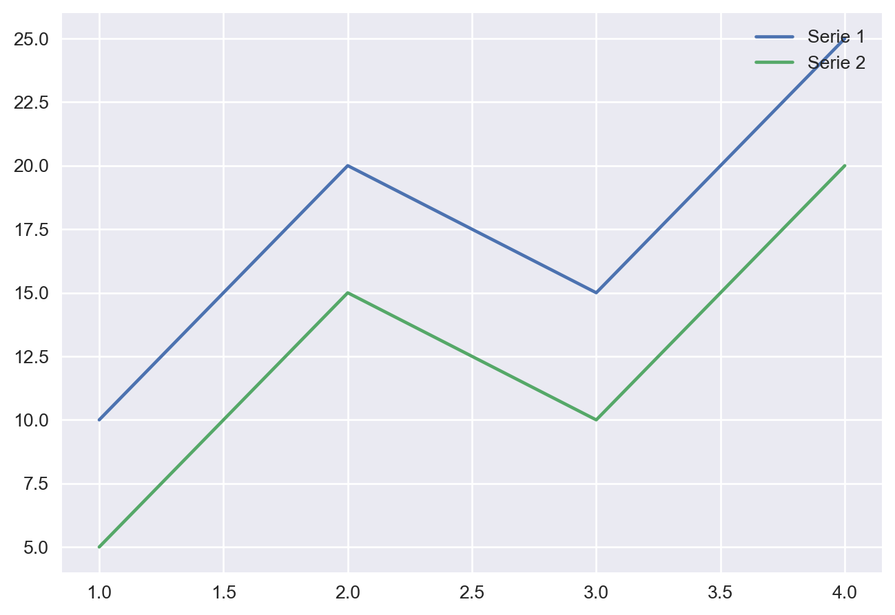
Asegúrate de proporcionar etiquetas claras para cada serie de datos en tu gráfico. Esto ayudará a los lectores a comprender qué representa cada línea o elemento visualizado.
Las anotaciones y el texto son una forma poderosa de resaltar puntos clave o proporcionar información adicional en tus gráficos. Python te ofrece diversas opciones para añadir anotaciones y texto de manera sencilla y efectiva.
Anotaciones:
Puedes añadir anotaciones en puntos específicos de tu gráfico utilizando la función plt.annotate(). Esta función te permite colocar texto en coordenadas específicas del gráfico. Puedes especificar las coordenadas xy del punto donde deseas colocar la anotación y las coordenadas xytext donde deseas que aparezca el texto.
import matplotlib.pyplot as plt
# Datos de ejemplo
x = [1, 2, 3, 4]
y = [10, 20, 15, 25]
# Trazado del gráfico
plt.plot(x, y)
# Añadir una anotación
plt.annotate('Punto importante', xy=(2, 20), xytext=(3, 22),
arrowprops=dict(arrowstyle='->'))
# Mostrar el gráfico
plt.show()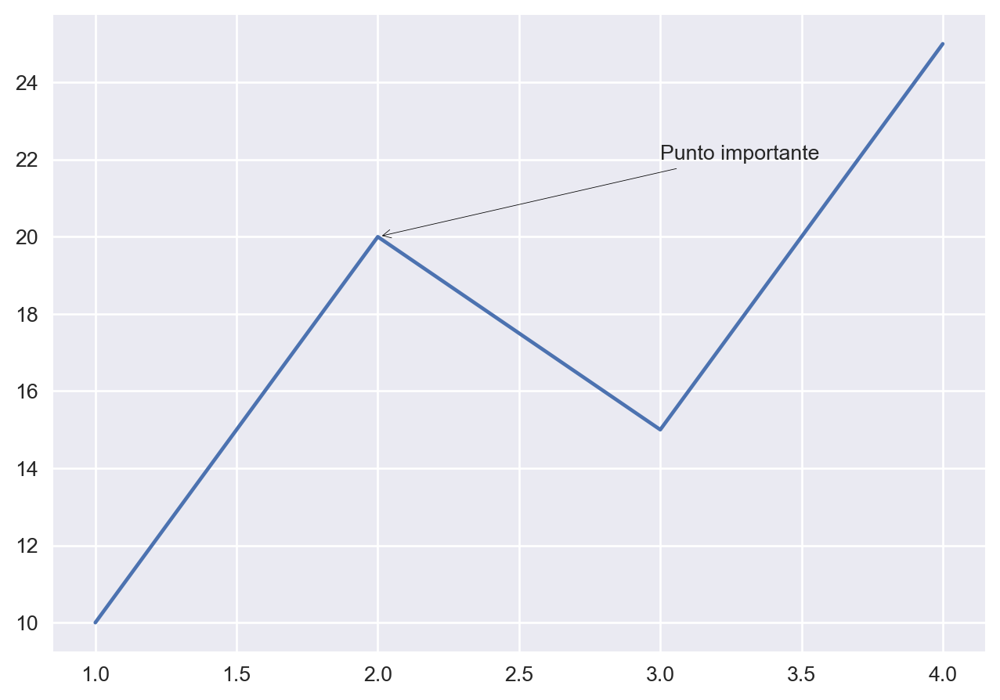
Puedes personalizar aún más las anotaciones agregando flechas utilizando el parámetro arrowprops. Esto puede ayudar a resaltar la relación entre la anotación y el punto correspondiente en el gráfico.
Texto:
Además de las anotaciones, también puedes agregar texto en ubicaciones específicas utilizando la función plt.text(). Esta función te permite colocar texto en cualquier posición del gráfico especificando las coordenadas x e y del punto donde deseas que aparezca el texto.
import matplotlib.pyplot as plt
# Datos de ejemplo
x = [1, 2, 3, 4]
y = [10, 20, 15, 25]
# Trazado del gráfico
plt.plot(x, y)
# Añadir texto
plt.text(2, 20, 'Texto adicional', fontsize=12)
# Mostrar el gráfico
plt.show()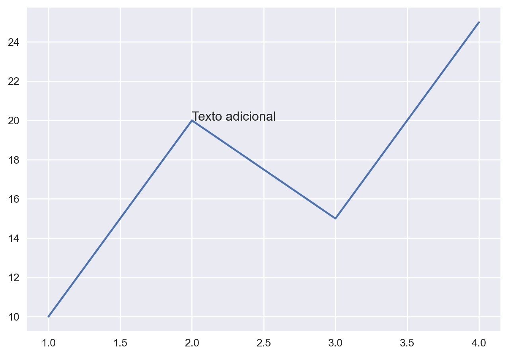
Puedes ajustar el tamaño de la fuente del texto mediante el parámetro fontsize para asegurarte de que sea legible y se ajuste a tu gráfico.
La visualización de datos con Python es un campo amplio y emocionante, y hay muchos recursos disponibles para seguir aprendiendo y perfeccionando tus habilidades. Aquí tienes algunos recursos adicionales que te pueden ser útiles:
Documentación oficial de Matplotlib: La documentación oficial de Matplotlib es una fuente completa de información sobre la biblioteca. Puedes encontrar tutoriales, ejemplos de código y una guía detallada para aprovechar al máximo todas las funcionalidades que ofrece.
Documentación oficial de Seaborn: Si estás interesado en explorar más sobre Seaborn, la documentación oficial es un recurso invaluable. Aquí encontrarás ejemplos de gráficos, descripciones de las funciones y consejos para crear visualizaciones atractivas.
Documentación oficial de Plotly: Para aquellos que deseen adentrarse en la visualización de datos interactiva, Plotly ofrece una documentación detallada. Aprende cómo crear gráficos interactivos, agregar animaciones y personalizar tus visualizaciones.
Cursos en línea: Existen plataformas en línea que ofrecen cursos especializados en visualización de datos con Python. Algunos sitios populares incluyen Coursera, Udemy y DataCamp. Estos cursos te brindarán una base sólida y te guiarán a través de ejemplos prácticos.
Foros y comunidades: Únete a comunidades en línea dedicadas a la visualización de datos, como el subreddit r/dataisbeautiful o los grupos de LinkedIn especializados. Estos espacios te permitirán conectarte con otros entusiastas de la visualización de datos, hacer preguntas y obtener consejos valiosos.
Libros y recursos impresos: Explora libros dedicados a la visualización de datos en Python, como “Python for Data Analysis” de Wes McKinney o “Python Data Science Handbook” de Jake VanderPlas. Estos recursos ofrecen una visión más detallada y práctica de la visualización de datos.
¡Recuerda que la práctica constante es clave para mejorar tus habilidades en la visualización de datos! No dudes en experimentar con diferentes conjuntos de datos, probar nuevas técnicas y explorar las posibilidades que Python ofrece en este campo.
En este blog, hemos cubierto una amplia gama de temas relacionados con la visualización de datos en Python. Espero que hayas encontrado información útil y te sientas inspirado para explorar y crear visualizaciones impactantes. ¡No dudes en compartir tus creaciones y experiencias con la comunidad!
Si tienes alguna pregunta o necesitas más recursos, ¡no dudes en comunicarte! ¡Feliz visualización de datos!
Si te interesó este artículo, te recomendamos que explores otros blogs y recursos relacionados que pueden ampliar tus conocimientos. Aquí te dejo algunas sugerencias:
Esperamos que encuentres estas publicaciones igualmente interesantes y útiles. ¡Disfruta de la lectura!
@online{achalma2023,
author = {Achalma, Edison},
title = {Introducción a la visualización de datos con python},
date = {2023-06-29},
url = {https://achalmaedison.netlify.app//docs/blog/python/2023-06-29-introduccion-a-la-visualizacion-de-datos-con-python},
langid = {es}
}